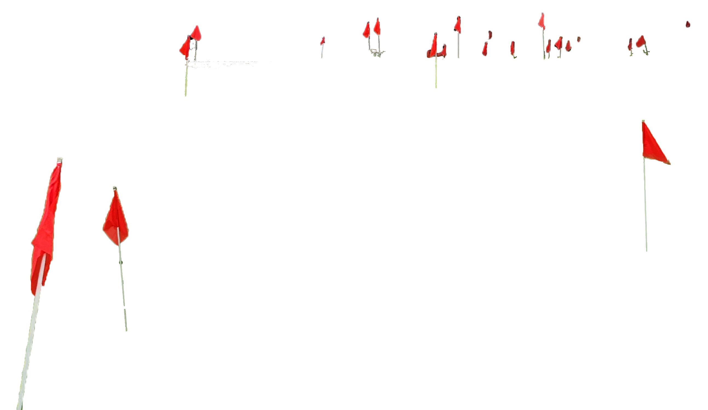
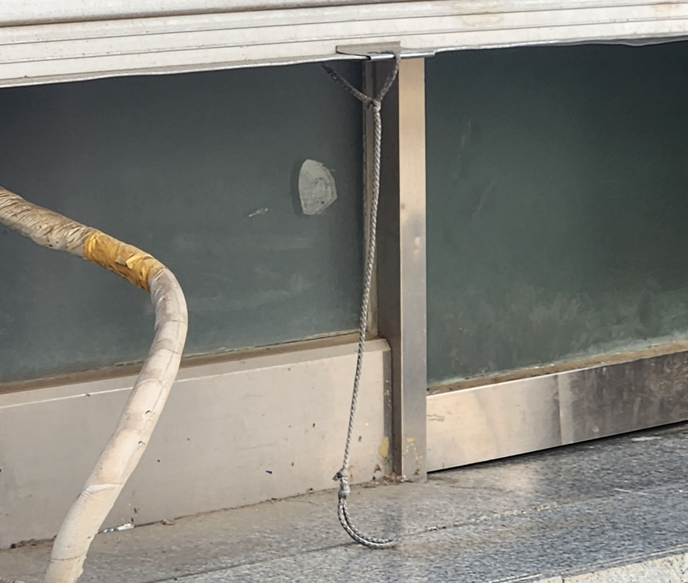
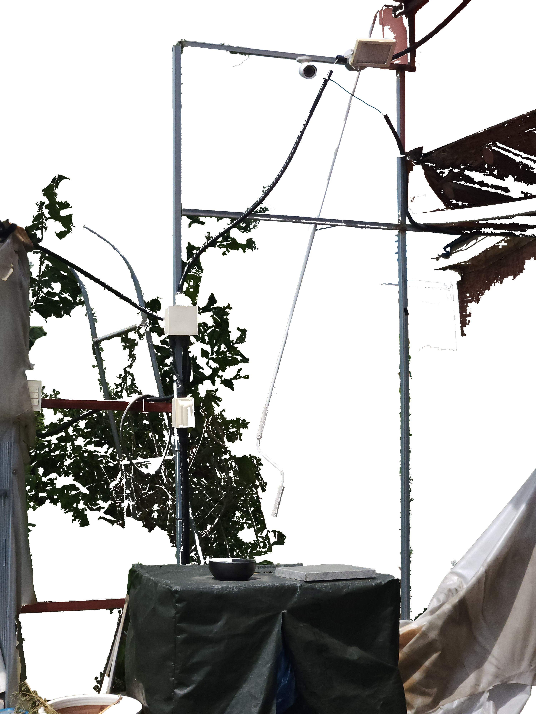
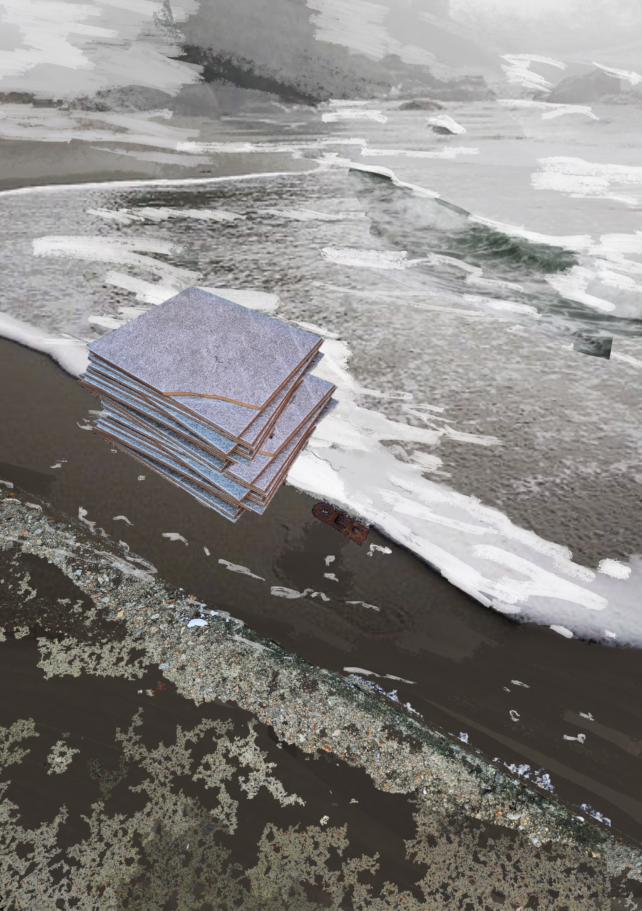
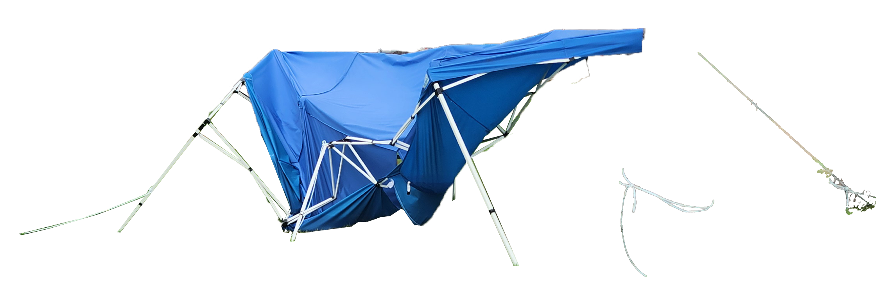

알파벳 E 없이 책 한 권을 쓰는 것이 가능하다면, 부재 투성이의 구멍난 삶이라 해도 그것을 살아내는 것 역시 가능하다. 모국어에서 가장 필요한 글자 E 없이 책 한 권을 쓰는 것이 가능하다면, 가장 사랑하는 사람 없이도 인생을 전부 살아낼 수 있다. 그 부재가 우리의 문법을 바꾸고 어휘에 그늘을 드리운다 해도 우리는 계속해서 실존의 이야기를 들려줄 수 있을 것이다.
사라진 사람은 계속해서 현존 한다. J-B. 퐁탈리스의 말처럼 사라진 사람은 "들리지 않고 보이지 않게 되었을 뿐이다." 세계가 무너져 내리면 지나간 실존의 자취들이 우리 삶의 표면으로 떠오른다. 어쩌면 우리는 더이상 존재하지 않는 것의 흔적을 보존해야만 하는지도 모른다. 우리 삶 속에 있는 유령의 은밀한 흔적을 지우지 말고, 균열을 메우지 않은 채 틈새와 공백을 남겨 둬야 한다.
주체가 창조되는 것은 연속성보다는 단절을 통해서다.
유령은 무엇인가? 유령은 부재함에도 불구하고, 혹은 바로 그 부재 때문에 너무 많은 자리를 차지하는 존재이다.
그렇다면 우리는 무심코, 실수로, 부주의했기 때문에 지금 이곳에 오게 된 것일까?
"내가 아니어도 되는 장소" ··· 역사 없는 장소 ··· 호텔에서 지내면 매일 아침 빈손으로 처음부터 새로 시작한다는 느낌, 새로운 사람이 되었다는 느낌, 거의 모든 애착에서 초연해 졌다는 느낌을 받는다. ... 항상 더 중립적이고, 개성화하려는 시도에도 불구하고 항상 정체성이 없으며 ···
빛의 속도에 가깝게 이동한다면 객체는 반투명해 보일 것이고, 이상하게 압축되어 종국에는 모두 사라질 것이다.
···중심이란 없으며 우리는 중심에 살지 않는다는 사실이다.···가장자리도 없다!
그리고 그 사랑을 생생하게 되살려 보고 싶을 때 머릿 속에 떠오르는 것은 어떤 디테일 - 너무 오랫동안 닫아 두었던 방의 냄새, 길 위에 울리는 야릇한 발걸음 소리 같은 - 뿐이지만 그것이면 충분하다. <책머리에서>
나는 바람 속에서 이 돌기둥들이며 이 아치며 만지면 따뜻한 이 포석들이며 황량한 도시 주위의 이 빛바랜 산들이다. 나는 지금까지 한 번도 나 자신에게서 거리를 둔 초연함과 동시에 세계 속의 현존을 이토록 절실히 느껴 본 적이 없다. <제밀라의 바람>
나는 다만 저 하늘이 나 자신보다 더 오래갈 거라는 사실을 알고 있을 뿐이다. 내가 죽은 후에도 없어지지 않고 지속되는 것 말고 무엇을 영원이라 부를 것인가? <알제의 여름>
무심과 무감동 상태가 오래 이어지다보면 사람의 얼굴이 어느 풍경의 광물적인 위대함과 일치되는 일도 있다.
이 세계는 나를 무화(無化)한다. 그것은 나를 극한까지 밀고 간다. 그것은 성내지 않은 채 나를 부정한다. <사막>